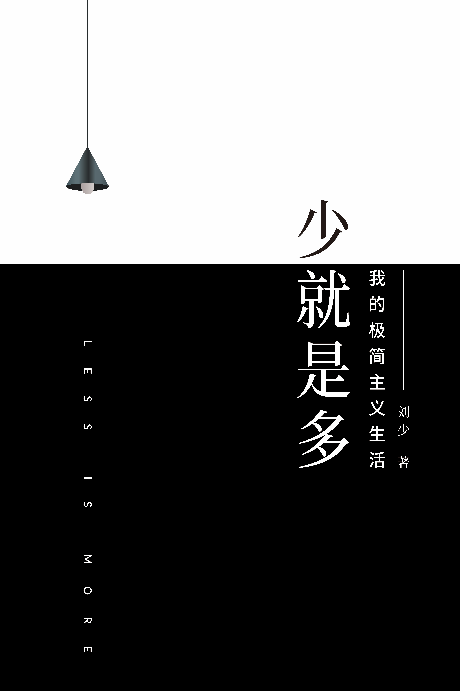

一本关于"减法"的极简主义生活指南。不是教你怎么断舍离,而是教你如何找到生命中真正重要的东西。十多万网友点赞推荐,实操性极高,可以立即改善你的生活品质。
一,我为什么要写这本书?有天刷知乎,发现我的一篇文章《我的10 条极简习惯清单》竟 然已经破了 1 万的赞,粉丝飞快的涨了几千,把当时还是知乎 小透明的我激动得不断刷屏,原文如下: 1,减少目标: 一年内,只专注于一个经过筛选的核心目标。2,简化衣着: 衣着基本黑白灰,遇到喜欢的款式同款的会买好几件,清爽, 好搭配,省事儿。3,少说: 谦逊少说,尤其是在高手面前,尤其是在不熟悉的场合。4,专一: 喜欢一生只爱一个人的纯粹恋情,要么 100,要么 0,简单安 心,远离暧昧,对复杂狗血的感情坚决断,舍,离!5,简化阅读: 只读一流的经典,只读自己喜欢的作品。自己喜欢的经典会重 复读。
相信我,把一本好书翻烂,胜过走马观花看 100 本三流 的书。6,少交: 浅交可多,深交要少。只和我们尊敬其人品的人深交,只和志 趣相投的人深交,谨慎慢热,这样朋友也许会少些,但是,都 靠谱踏实,可少被坑。7,极简整理术: 买东西少而精,控制好源头,整理就简单了,只需每晚扔一次 垃圾,外加每周末花半小时来一次彻底的大扫除。8,简化作息: 每天5 点起,10 点睡,晨练半小时以上,每天都神清气爽,还 保证了规律早起,个人最喜欢这个习惯。9,简化护肤: 每天晨练后清水淋浴一次,洗发水和洗面奶一个星期用一次左 右--最高的频率也会隔天使用,护肤只用最基础的清洁保 湿。少折腾,皮肤状态反而理想。
10,减少烦恼: 有烦恼的时候,取冷静理性的态度,用"五步流程"之类的思考 工具一步步梳理解决,而不是怨天尤人生闷气。...... 当然,我这个《10 条极简习惯清单》写得比较随性,很多事情 并没有写清楚,导致很多朋友私信我,想要我多写点,详解一 下具体操作。甚至有朋友建议我写一本极简生活相关的书,我 当时还没有写书的想法,毕竟,写书动不动就是十来万字的大 工程,可不是玩的,这可是一个大坑啊。可是,我后来还是入坑了。
因为我发现随着生活的富足,人们 选择变多了,但是,却也都陷入了某种疯狂:比如人们整天喊 着剁手,然后话音未落就又买一堆过几天就后悔的东西,他们 害怕孩子沉迷网络,自己却不是在低头刷微信就是躺着刷抖 音,而好久就发誓要看的专业书却在边上吃灰,她们成天喊着 减肥,但是,过一个月你再看她,她依然是一个大胖子...... 说实在的,看着身边的亲人和朋友如此,我有点痛心疾首。我 奇怪人们为什么要把生活搞得那么复杂,物质,混乱?心想不 是有更简单更好的处理方式吗?
在我的圈子里,我多少有点"奇葩",我一直保持着较为简单的 生活习惯,比如我总是坚持5 点起,并在别人醒来前几个小时 就健身完毕,还有三四个小时用来学习和工作。比如我是一个 学文的人,因为比较自律,却很快学会了软件开发,我身体很 健康,已经好几年没上医院了,当然陪妈妈去医院不算。多年不见的同学聚会,很多以前一起打篮球的同学已经胖得跟 篮球一样了,我的身材和状态却依然像当年,去年和一个刚认 识不久的妹纸面对面晚餐,吃了半个小时后,她问我:"你其实 是刚毕业不久的,对吧?" 对于一个毕业多年的人,我觉得这 是一种赞美,哈哈。很多网友,就像我很多大腹便便的同学一样喜欢问我:你有什 么秘诀吗?告诉我哈。
其实,没那么神秘。我只是有一套较为简单高效的方法罢了。这本书,就是专门讲这些极简心得的,只要你看完,都能很快 学会,并马上就可以用到你的生活中去,为什么?因为很简单 啊!我们置身于越来越多选择的现代技术世界,作为一个前程序 员,我对此比一般人感触更多。作为习惯缺乏信息和物质的人 类,我们还不习惯这样信息和物质极大丰富的生活。我们往往 凭本能冲动去胡乱选择:我们要么纠结于各种选择,要么就选 择了太多,更糟糕的是,我们干脆就选择了错误的东西。
这情形,很像一群穷了很久的人,突然闯进了一个琳琅满目的 大超市,他们兴奋得两眼放光:一些人不管不顾的把各种适合 不适合的衣裤都囤积好几十套,凭的不是合身不合身,看中的 只是品牌,而且本来三五套就好了,却恨不能把超市洗劫一 空,要么就是蜂拥到垃圾食品那儿买上一大堆,也不管长远健 康的事儿,只图今天晚上能吃个痛快...... 当然,超市只是一个隐喻,我们的现实生活是更大的超市...... 看到这种种疯狂的现象越久,我就越想为身边人写一本介绍极 简生活的书,因为你能做到,而你身边的人却不能做到并因此 而痛苦的时候,你在边上干看着是一种很痛苦的体验,我希望 能启发他们过更简单高效的生活。
是的,这本书,就是为我的 姐姐,为我的外甥,为我身边的朋友们而写的,当然,同时也 是为追求简单生活的您而写的。二,我的极简观 "您觉得极简主义是什么?" "你是因为什么喜欢极简的?" "你是从什么时候开始极简生活的?" ...... 自从我建了第一个极简群开始,尤其是我知乎上的粉丝越来越 多后,就有很多喜欢极简的朋友不断的问我这类问题...... 什么是极简主义的生活方式?我一直不想把极简主义的生活方式定义得那么刻板,我的理解 里,极简主义者并不是家里的物件一定要少于 100 件,也并不 是每天一定要整理个不停......我理解里的极简生活,是一种简 单高效,自然随性,健康理性的生活方式。
至于说到我是什么时候成为极简主义者的?我好像还真不确定是哪个时间节点?我只能说,很多时候是无 意识的。直觉上来说,我觉得极简的生活是符合人的本性的,在我看 来,这种追求简单的生活方式,难道不是必然的吗?我们人类 遇到事情,天性就喜欢选择最简单的解决方案,不是吗?只要你认真努力的生活,我觉得你自然而然地就会过上一种更 简单纯粹的生活,从古代的先贤到现代的精英,过的都是一种 类似的淳朴简单的生活,举例而言,从西塞罗到老子,从富兰 克林到曾国藩,从扎克伯格到乔布斯......他们过的都是一种很 简单,有节制的生活。
我觉得极简其实极度好理解,因为,如果你是一个敏感的人, 直觉就会告诉你,简洁简直可以和好划等号。举例来说,我以 前玩过单反,并帮朋友拍过台灯,她的灯具是纯白的,然后我 用深黑色的背景衬托,出来的效果极度惊艳,因为黑白分明, 简洁纯粹,对比强烈,让人过目难忘。这张简洁大气又主题凸显的主图在淘宝上点击率极高,帮我的 朋友在淘宝上迅速地提高了销量,转化率极高,导致这款台灯 一度处于那个小品类 top 前 5 的位置,她一度要我过去当专业 摄影师,只是我无志于此--我只是把摄影当做一个业余爱好 罢了。
极简风格的商品主图简约抢眼,在我看来就像天上有太阳一样 明显,但是,很多人却视而不见,说实在的我很奇怪。再举个例子,你经常会看到很多广告啰啰嗦嗦地罗列一大堆产 品优点,什么都想表现,结果呢是你什么都没记住!对吧?相 反,好的广告文案会筛选出最核心的那个卖点,然后,一句生 动有趣的广告词,只是简简单单的一句话,却可以让你永生难 忘,这就是简洁的力量!再举例说,你看有些人穿一身简洁清爽的服装,你会觉得这人 高雅有型气质好,反例是有些人穿着几千几万的品牌,但是花 里胡哨五颜六色,你依然会觉得他很俗气。
我以前有一个女同 事,她就老批评我的衣品太差,因为我的着装一直是黑白灰的 极简风,虽然我偶尔也会蓝色牛仔裤配白衬衫,我喜欢这种简 洁清爽,她却不喜欢,后来我就请教她什么叫好的品味,她就 翻出一件准备送她男朋友的衬衫,她说,你看,这是某某大 牌...... 然后我就仔细研究那件所谓大牌,怎么说呢?设计风格花里胡 哨,像五颜六色的小国国旗,然后我就有点忍不住笑:"这种花 里胡哨的,也太丑了吧?" 她说:"这衣服是某某大牌,五千多呢!今年流行的时尚,你懂 什么?" 贵,大牌,流行,这才是她理解里有品味的表现,我这才明 白,这就是她判断衣服品味的标准。
真心而言,与其花几千买 这种花里胡哨的大牌,我宁肯穿一件三百但是简洁清爽的优衣 库。最近,有一个朋友私信我:"你的极简生活习惯,是受了谁的影 响?" 这还真是把我给问住了,我只能说,是来自各种阅读,外加自 己的实践和思考,慢慢总结出来的。比如,我简洁的穿衣风格,其实是因为看过一些设计类的书后 受的启发。简单固定的作息习惯,是受一个自律的老外的启 发,有次看到这人一篇访谈,觉得他每天 4点就起床跑步的习 惯挺酷的,而且,这么简单的习惯还能有效地提高一整天的执 行力,我为什么不试试?
说到简单的护肤习惯,是因为我之前看到一篇科技博客,里面 说有个教授戒洗发水和沐浴露半年后头发和皮肤反而更好,原 理是因为人体皮肤表面本身就有能保护皮肤的有益菌,清洁用 品用得过多反而减少了有益菌,结果,是反而伤害了皮肤屏 障...... 于是,我就想这事儿真的是多一事不如少一事呢,完全用不着 天天用洗发水啊,于是,我就试着每天清水淋浴,隔天用一次 洗发水......我坚持了一段时间后发现头发皮肤状态反而更好 了!于是,我也就采取这种更简单省事--你也可以说是更懒 的方式了,当然,具体怎么做,后面的章节我会详细说明。饮食方面的极简灵感则来自读了很多人的传记,比如富兰克 林,聂尔宁,乔布斯等等。
关于极简书籍的阅读,这本书的后 面,我会列出 10 本我认为最好的关于极简的书单供大家参考, 我还会写出自己的推荐点评。总体来说,没有接触"极简主义"这个概念前,我是无意识地想 把生活过得简单,高效,直到了解了聂尔宁和乔布斯这些人的 生活方式后,我才意识到,其实,我一直追求的简单高效的生 活方式可以用"极简主义"这么一个词来形容。三,关于这本书 在这本书里,我系统地总结了自己平时简化生活的方法,涵盖 极简生活的方方面面,从学习到工作,从健康到交际...... 我在知乎常收到网友的私信说,很喜欢你的方法,也喜欢你的 文笔,但是,极简的方法看起来容易做起来难啊!
而在我看 来,这都是像本能一样简单的事儿,做起来毫不费力,为什么 别人却会有这样的感觉呢?后来我才想明白,这大概就是所谓会者不难,难者不会吧?毕 竟这些极简方法我早已运用多年,早已习惯,习惯成自然,自 然毫不费力。但是,我觉得别人应该都能学会,因为本质上这 些东西不难。我平时工作比较忙,也一直想写这本书,但是一直抽不出时间 来,2020 年新年伊始,新冠病毒疫情猝不及防地爆发,我和大 家一样被迫在家隔离,我就想,何不利用这段时间写书呢?
于 是,我就趁机写出了这本书,我又是一个完美主义者,后面自 然纠结地反复修改了很多遍,去知乎上写个1000 字的答案也许 只要 20 分钟,就像在小区公园溜一圈一样惬意,而写书就像跑 马拉松一样要命,这是一个你需要做好打持久战准备的难缠对 手......好在我最终写完了!我相信,你只要认识字,看完这本书,你就可以极大地简化自 己的生活,从而让您的生活更简单高效。关键是我这本书不会 讲什么晦涩难懂的理论,也不会卖弄什么玄虚的词汇,一切都 是我所读所行中总结出来的,并且都是在我身上应用很久了的 习惯,并且证明是有效的,而且简单易行,也并不需要你有什 么强大的意志力--后面我会详解做到的方法。
看完这本书,你将会有以下三大收获:
1,你的生活会更简单:你的生活会立马变得更简单轻松,你会找到自己的核心目标--你会更明白自己想要什么,你的生活会更有激情。
2,你会更自律:我会有一些简单的方法帮你建立自律的习惯,你会对自己的生活更有操控感,你会成为自己的主人,而不是时刻被一些自己的恶习主宰,你的生活会更自由精彩。
3,你会更健康:你的精力会更充沛,心情会更愉快,你的身材,甚至你的皮肤都会变得更好。
1.1,作息简单 以前,经常有朋友私信我:"我觉得你的《 10 条极简习惯清单》挺好的,但是,我做不到,因为,说起来容易做起来难啊......" 好吧,第一章,我们就先来解决执行力的问题,而且,方法也很简单。
这个简单的方法,就是给自己设定一个简单但固定的作息表。例如我每天有一个5 点起,10 点睡的固定作息表,当然,季节 不同会延迟或者提早一点,但是,基本都很规律,到点就睡, 到点就起,简单省事,同时每天坚持晨练,这些是我所知道的 提高执行力最简单,同时也是最有效的方法。
1 现在的我,每天基本都会晨练半小时到一小时左右,有一个5点 起10点睡的固定作息表,偶尔应酬或者加班晚睡,但是基本保 持这个节奏,午睡不超过 20 分钟。早起晨练,除了能让你早起 并保持一整天的朝气外,还有一个好处,就是你忙碌一天之 后,到了晚上 10 点左右你就会自然犯困昏昏欲睡,如此一来睡 眠质量很高,日复一日,就会形成一个正向的循环。有这样一 个简单规律的作息表,你对生活会更有操控感,做到了这点, 就是你在过生活,而不是生活在过你。我给你们说说我的故事,我的编程技能是边工作边自学的,有 多累--只有我自己知道。
我必须说服自己,只有极端自律才 能挤出学习时间,去面对那些对一个零基础的人来说是难度极 高的学习任务:全英文的教程,计算机原理,代码练习,各种 Bug 各种报错,一直到有一天看到自己写的代码能跑起来,直 到自己的第一款 APP 上架...... 期间我每天 5 点起来去附近的公园跑步,然后回去冲澡,在上 班前自学几个小时,晚上自学到 11 点睡觉,期间公司有妹纸主 动示好,我也如老僧入定般装聋作哑,因为我必须专注,万一 遇到一个花心的,分手痛苦几个月,那我的计划就泡汤了。
一年后终于完成心愿,当然期间各种坚忍细节不可胜数,但 是,你要做成一件高难度的事情肯定要自律努力。我意识到提高执行力最简单有效的方式,就是有一个简单固定 的作息表,是因为看过一个外国大学生的作息后受到的启发, 这哥们更极端,他每天 4点起来跑步,数年如一日,然后这哥 们成绩优异,在大学期间还参加了很多课外活动,这还不算, 他还用课余时间写了好几本书,可谓执行力爆表,而他很多同 宿舍的同学有些经常中午还起不来,还在每天感叹寂寞......我 很欣赏这哥们身上自律坚韧的劲儿,心想,这方法其实很简单 啊,而我采用这样的方法后,也是惊喜不断。
其实,早睡早起作息规律这方法很多牛人都推崇,比如毛泽东 和蒋介石都佩服的清朝强人曾国藩就曾说过一大名言:修身第 一要义在于治懒,而治懒第一要义在于早起。提高执行力的方法有很多种,我为什么独独推崇规律早起的方 法呢?因为这是最简单的,你只要固定自己的作息早睡早起就 好了,基本上就管理好了自己,至少执行力都不错。而且,每天到点就做这个事情,就很容易形成习惯,而一旦形 成习惯,一切都会自然滚动起来,因为有了惯性,你下次,下 下次再做的时候就基本不用什么意志力了。就像我们每天早上 都会自然地刷牙一样毫不费力--没人觉得每天刷牙需要强大 的意志力吧?因为你已经习惯了,让你不刷牙才需要强大的意 志力!
对吧?早起运动也是一样,早起运动刚开始的那两天会比较痛苦,坚 持一个星期,你就会开始享受早起的生活,你也会越来越喜欢 晨练后朝气蓬勃的感觉,相信我,早起运动后的感觉真的很 好,你现在让我一天不运动,我反而不舒服。另外,我还有一个设定闹钟的好方法,就是我会把闹钟铃声设 成自己的语音提醒。比如,我会给自己录一段声音文件,比如 我会在录音里说:"喂,起床了!5 点了,快点起来,早上起来 可以做很多事情呢,5 点啦!快点起来运动!
" 这个设置也很简单,你只要在手机的录音软件里录音,之后保 存为例如"早起提醒",然后,在闹钟的"选择铃声选项"里点击 "选择本地铃声",然后点击"早起提醒"文件,那么每天早上都 有一个人在你耳边亲又提醒,多好!好过那些若有若无的铃声 提醒。
当然,你的录音可以自由发挥,你可以录一些比较有刺激性的 话,比如你可以录成"老娘太胖了,我要在 10 月 1号前减肥 10 斤,快点起来,快点起来运动,6 点啦,快起来跑步。" 或者是"我要考清华,5 点啦,快点起来运动看书,早起都做不 到,还考什么清华?快点起来!" 我相信,只要这么叫嚷一 通,你绝对会精神大振!动力满满,狂奔 5 公里刹车都刹不住 哈哈。
2 很多人有很多美好的愿望,今天要英语词汇量过5万,明天要减 肥 10 斤,后天要年入百万......只是说说,没见行动,或者激情 燃烧两天就完了......因为说到做不到,因为没有执行力,因为 没有好的习惯!有很多人会抬杠说,你说的轻巧,等你有了孩子你就会起不来 了。如果你是全职的程序员,你不加班吗?呵呵,那只是你给 自己找的借又罢了,每个人都有意外的安排,都有特殊情况, 都有现实压力......比如你附近这几天施工吵到你睡不好,比如 你最近要加班一个星期, 比如你最近生了个娃...... 你是一个成年人,这些特殊情况要你自己想办法处理啊,难道 我就没遇到各种恼火的情况吗?难道要我一一帮你应付吗?吵 闹你不会买个耳塞吗?
偶尔加班,你可以中午补觉多一些...... 遇到问题就想办法呀,要相信自己,你肯定能找到解决方案 的,而不是一遇到问题,就当做放弃的借又,那是对自己不负 责任。而且,提高执行力,也并不是只有这一条路径。简单的自律有 很多种方式,比如乔布斯就不是那种会固定作息的人,他经常 会半夜两点想到一个好主意,然后把同事叫醒并热烈讨论两个 小时,也有福楼拜这样的作家喜欢夜间工作的......
我并不是在这里号召全球人民每天 5 点起 10 点睡,然后狂奔五 公里。你完全可以 7 点起 0 点睡,这不是重点,重点是你要对 自己有要求,并让这个要求习惯化,进而变得容易执行,进而 掌控你自己的人生。乔布斯有冥想的习惯,并且常年遵从苛刻的素食,居室永远都 是严格的极简朴素风格--甚至买一件家具都要讨论数月才能 下定决心,作为一个亿万富豪他可并不是因为缺钱,这些都体 现出他极端苛刻的自我要求。所以,自我管理,也并不是只有这一条路。只是,我觉得规律 地早睡早起并且坚持晨练,更加普遍有效。举几个例子,苹果 现在的CEO 蒂姆 库克就是每天4 点起床,然后健身完毕再工作 的。
而前百度总裁陆奇也是每天 4 点起床然后跑步的,这哥们也是 典型的自我奋斗型,他从一个普通的程序员成为业界大佬,靠 的就是自己的自律勤奋,当然,事实也证明他的生活方式很健 康,常年坚持早起晨练,使得他能完成超人的工作量,现在年 近六十,依然朝气蓬勃,满脸的少年感。我很希望我六十的时 候,依然能像他一样朝气蓬勃,所谓归来依然是少年,我觉得 这也算是一大成就。有些程序员加班个两三天就说做不到了,其实想想,陆奇也是 经常加班到深更半夜的,而且即便如此,他依然每天早起跑步 4 英里,然后 每天5,6 点就到办公室了。
这不是瞎说,这是他 以前在雅虎和微软的同事公认的,你的工作强度,肯定没法跟 一个管理数万人的 CEO 相提并论的,所以,你要给自己找借 又,总是能找到的。你面对的各种烦恼,他也会遇到,只会更 多。我现在觉得,有一个固定的作息表,是最简单,也是最起码的 自我管理。小时候我们被爸妈管着,上学的时候被学校管着, 上班的时候被老板管着,导致很多人一生都没有自我管理的习 惯。那么,在你的生活中,你一定要学会一些最基本最简单的自我 管理,如果这个最基本的你都做不到,你,只能被别人管理。
3 具体怎么做呢?刚开始,如果叫你像蒂姆 库克那样每天 4 点起床,你根本爬不 起来,可能大多数日子里,你是 8 点30才起床,然后洗个脸刷 个牙,吃两片饼干喝点牛奶就去挤地铁的上班族--多半是还 会迟到的胖子哈...... 这个时候,叫你立马 4 点起床是不现实的,我觉得比较现实的 做法是先提前到 7 点起床,过一个月再调整到 6 点起床,这样 比较实际,也更容易实行。运动强度也是一样,如果你已经好几年没正儿八经地锻炼了, 大清早立马狂奔一小时,猝死都有可能,更现实的做法是早起 去小区公园散步半个小时,走上一个星期,然后开始慢跑半小 时,逐步增加到 1 小时。
戴着耳机听适合的音乐跑步其实一点都不累,我以前特喜欢边 听 MJ 的《heal the world 》边跑步,刚开始是很慢的前奏,你 慢跑就好,随着节奏加快,你也加快节奏,每一步都跑在节奏 上,那不是跑步,那是一种享受......如果是在公园里,还有阳 光清风,这种时候跑步听着 MJ 的吟唱,我告诉你,这绝对不 是苦差事,这就是一个人的独舞享受......方法是多么重要,减 肥的朋友们,我强烈建议你们听着这首歌跑,当然你也可以多 找找类似的歌,你会对晨跑上瘾的,我最近两年跑得少是因为 想增肌,跑步太多对增肌不大好。
当然,你也可以隔天跑步 半小时,隔天做 20 组俯卧撑,游泳 或者骑单车都行--做任何你喜欢的运动都行。关键是你开 心,并能坚持下去的。另外,刚开始自律不够的话,我们可以结合他律增强你的执行 力,比如我们可以参加一些早起打卡群,现在微信太方便建群 了,你只要拉进几个一起考研的人,或者有早起想法的朋 友......你们约定每天到点就早起,不行就打微信电话互相提 醒,或者群发红包作为惩罚,这些都是很好的措施,能确保你 养成早睡早起的习惯。
为什么要选在早上运动呢?因为我个人的经验是:如果你早上 8 点或者 9点起来晨练,看起来会很傻--至少我会觉得太迟起 床晨练看起来很傻,因为我试过晚起晨练的尴尬。想象一下:你穿着运动服跑步回家的路上,对面一大群背着电 脑包的上班族外加一大堆背着书包的学生......情形是不是很尴 尬?所以,你会强迫自己早起。晨练要有晨练的样子,你 9 点 起床,晨练个什么劲儿啊?你这不叫晨练,叫午练比较合适 吧?
坚持早起晨练,某种程度上也算是一定的苦行,这需要一定的 意志力,早上是意志力最强的时候,很多人傍晚或者晚饭后难 以坚持运动的原因,一个是其他事儿干扰太多,另外一个主要 原因是下午或者晚上人已经被生活工作摧残得意志消沉体力全 无了,这个时候去运动何止是苦行?简直是酷刑,所以,很多 人的运动计划结果都是不了了之,以太累了为由放弃。
而且,早起晨练还有一个好处是你早起后,你会发现在上班之 前你还有三四个小时可以自由支配,这段时间只属于你,没人 会在这个时候干扰你,而这段时间又是一天之中体力和意志力 都最强的时候,也是效率最高的,你可以用来学习外语或者编 程,或者某本你平时一看就很头疼的专业书籍......这些确实都 是很有挑战性的难事。在你一天中意志力最强的时候,去干这 些最难的事情吧!相信我,如果在你体力最充沛意志力最强的 时候,你都不会去做的事儿,你倦怠的中午或者疲惫不堪的晚 上,你就更不会去做了。甚至,你一生都不会再去做了--也 做不到了,所以,早上的这段时间是你变强大的最后机会了。
马克吐温说,如果你每天早上必须做的第一件事是吃掉一只青 蛙,那么你这一整天都会感到满足,因为你已经知道这可能是 你这一天中难度最大的事情了。
当然,天天到点就睡到点就起,这可能是最理想的状态了,偶 尔你可能会睡的更迟,但是尽量 5 点起,会是一个好的选择, 你可能加班或者忙某一件事情到 11 点,那么睡六个小时,也没 什么大不了,如果白天实在太困,那么你可以午睡 20 分钟-- 但是别太多,多到影响晚上的睡眠就得不偿失了。 如果到时候早上起不来怎么办?买一个闹钟放到你够不着的窗 台上,或者干脆放到客厅里,会是一个明智的做法,如果怕吵 到同伴,你也可以买一个带震动功能的智能手环--比如小米 手环什么的。
4 还有人问,我是那种三天打鱼两天晒网的人,我该怎么办?比 如我坚持了六天,那么有一天起不来怎么办?这个很正常的,我偶尔也会起不来,毕竟你我都是人类,我们 不是精确的机器,那怎么办?你必须接受自己的不完美,总结 经验,是因为什么起不来?明天继续早起不就完了?关键是,你只要坚持早起就好了,你一年早起 350 天,有 15 天 做不到,你就冷静地接受它呗--就像你我都必须接受世界的 不完美一样,这叫成熟,至少比 350 天都晚起好吧?这比起你 天天晚睡晚起已经是巨大的进步了!
当然,你也可以不断的改进自己的起床规律,比如做到365 天 都早起--那是你的终极理想,但是,如果你能坚持350 天都 早起运动你也很优秀了。365 天都早起是你的理想,如果做不 到,哪怕早起 300 天都好,只要不断调整自己,不断朝这个目 标迈进就好--容忍不完美的进步,才能取得进步。当然,遵从一个简单规律的作息表,并坚持晨练,可能算是一 定的苦行,如果你说我只想平淡安稳的过一生,我只想看看电 视吃吃零食,我不想那么轰轰烈烈的人生,我只想做一个平凡 的好人...... 在我看来,那也挺好,只要你不伤害他人,我觉得那也是一种 生活选择,只是我个人更倾向于我现在这样早睡早起简单自律 的生活。
这种每天早起晨练的生活方式,可能更适合那种渴望过简单自 律生活的人,比如你说,我是那种富有雄心的人,即使不断跌 倒依然不断奔跑,我是那种享受苦行也享受快乐的人,那么, 这种简单自律的生活方式就适合你。 最后,简单总结一下,提高执行力的极简方法: 1,早起晨练: 保持简单规律的作息,每天早睡早起并晨练半小时以上,午睡 要少,晚上到点就会昏昏欲睡,简简单单就能让生活进入正循 环。
2,贵在坚持: 如果某一天起不来,那就总结经验教训,明天继续早起就好 了,别因为一点不完美而放弃。
1.2,减少目标 我以前写的极简习惯里,喜欢把极简衣着之类的当做第一条, 因为极简衣着比较直观,便于大家理解和操作,好像大家也挺 喜欢的,后来我发现这样做是不妥的,因为衣着这类事情当然 也重要,但不是最重要的。生活经验告诉我,精简并找到自己唯一的核心目标才是最重要 的,这就像一艘船必须知道自己唯一的目的地一样重要,不 然,那艘船只能随波逐流永远到不了岸,只能在无尽的黑暗里 遭遇凄风苦雨...... 我之所以不喜欢说梦想这个词儿,而喜欢说目标这个词儿,是 因为梦想这个词儿太梦幻了,目标是可以实现的,是可以量化 的,而梦想不是。
比如我想今年挣到 100 万,比如我想今年减 肥 10斤等等,听起来就比较靠谱。而梦想这词儿,听起来和做 梦太有缘分了,我不喜欢。我发现很多人说自己迷茫,或者事多抓瞎,私下多聊一些,往 往就发现是目标出了问题,而究其根源,往往又是认不清自 我,或者错把他人的期望当做自己的目标了--比如家人朋友 都期望你买房买车或者娶妻生子,又或者太贪婪奢望太多不懂 精简而眉毛胡子一把抓,总而言之,往前看,觉得前程迷茫, 看当下,又缺乏激情的人......很多时候都是目标出了问题。要 过上极简快乐的生活,第一条,也是最重要的,就是学会精简 目标。
有一次,我看特斯拉电动车的老板马斯克的访谈,觉得很有感 触,主持人问马斯克:"您对自己的孩子有什么要求和期望?" 马斯克的回答是:"我希望他们有自己的目标......" 事实上,马斯克也总是给自己设定雄心勃勃坚定清晰的目标: 比如要将人类打造成星际公民,要推动电动车在地球上的普及 等等,当然,他这样说,更是这样做的。而我自己对身边人的观察,发现那些没清晰坚定目标的人,往 往是饱食终日无所事事的,有些人的生活甚至是空虚无聊以至 于犯罪的,可见目标的重要性。
我每年年末都会花一个星期总结一年的得失,也会看看以前几 年自己的日记,记得去年年末翻前几年的年度计划时让我吃惊 不小,因为我以前的目标清单居然那么复杂混乱,比如我有一 年的目标清单居然是这样的: 1,开发一款下载量百万的 APP软件 2,找一个聪明可爱的女朋友 3,增肌 10 斤 4,学会一件乐器 5,成为拳击高手 6,写一本畅销的小说 7,英语词汇量达到 5 万 用我一个很尊敬的长辈的说法就是:"你这是眉毛胡子一把抓, 做事缺乏重点啊......"现在成熟点看,这里面最大的问题是目标 不够精简,目标太多,而且每一个难度都很大,能实现其中两 三个都很难,更不要说同时实现这么多困难而且相互矛盾的目 标了。
用我当时一个女性朋友的话说就是:"你其实挺有潜力 的,但是,你的问题在于你不知道自己要什么......" 目标不明晰坚定严重困扰着我的生活,我其实挺努力的,但是 我的生活并不如意,我并不开心。后来,我开始大量阅读相关 的书,并请教一些朋友,同时不断反思,我发现自己的问题是 目标太多,不够精简,我在同时追两只兔子!不,很多时候甚 至是同时在追一群兔子,结果当然是徒劳无功的。
我们人类天性就容易贪婪,最常见的表现是在物质层面我们喜 欢买很多东西,在目标上,我们也会犯同样的错误,麻烦在 于,目标比较抽象。懂得筛选和精简目标,是人生中最重要的 事儿了,因为,这事儿干得不好,那就真的是满盘皆输了。因 为我们不是全知全能的上帝,我们不可能同时完成很多目标, 很多时候,我们只能利用我们此时此地手头上仅有的一点时间 和资源去完成那一个核心目标。经过很多阅读和思考,我逐步有了一套自己的简化筛选目标的 思考框架,下面我会逐步结合案例给大家展示--就以上面我 这个过去的目标清单为例,我们来逐步理清自己的思路,并问 自己这么三个问题: 1,我想要干什么?2,我生活中最大的问题是什么?
3,我能干什么?想清楚了这三个问题,你对自己的主观欲望,现实问题,客观 能力都会有一个全面的了解了,做出的决策就不至于那么不靠 谱,你就容易得到一个简单清晰的目标了,生活的一切都会随 之变得简单轻松了。下面我们就举例细细分析这三个问题: 一,我想要干什么?这个是主观欲望上的事儿。我们可以尽可能地列出自己想要干 的事儿,最好是一个清单,可以是 5 件事,也可以是 10 件事 儿,先不要管能不能实现,你就不管不顾的先写出来,关键是 不遗漏,这里还是以我上面的年度计划为例: 1,开发一款下载量百万的 APP软件。2,找一个聪明可爱的女朋友。3,增肌 10 斤。4,学会一件乐器。5,成为拳击高手。
6,写一本畅销的小说。7,英语词汇量达到 5 万。列出我们想干的所有事情后,我们进入第二个环节:
二,我生活中最大的问题是什么?人生有太多问题,我们往往容易被各种问题弄得焦头烂额,也 许你现在正面临着诸如男友要分手,体重要减20 斤不然身体吃 不消,公司业绩差要倒闭了你的工作岌岌可危,首付还差 10 万......等等问题,面对一卡车的问题,你不可能什么都做,我 们必须分清主次,抓住了主要问题,一切问题都会迎刃而解。理性实际点看,最好一段时间内只处理一个主要问题,比如一 年内,只干一件大事儿,集中力量解决主要问题,就像打仗一 样,集中优势兵力,逐个击破,这样才能赢。
我们每个人的不同阶段,都会有一个主要的大问题,比如学生 一般都是学业问题,年轻人一般都是事业问题......比如:张三 今年最大的问题是想考上清华,但是两科成绩还需要加强,老 李最大的问题是要减肥 30 斤,因为医生说他身体太胖心脏问题 太大了,他必须减肥,不然今年都有可能猝死......王五今年最 大的问题是必须挣到100 万,因为他上有老妈病重,下有两个 娃娃要上学...... 还是以我自己这个年度清单为例,我写这个年度计划的时候, 我自己的实际情况是:我是一个工作才两年的年轻人,在大城 市打拼,房租贵得吓死人,而且日常消费也高,而我的工资也 只是中等,而我事业上有较强的企图心,我对自己的未来很焦 虑,所以,我最大的问题还是事业方面的问题,我想做大事业 挣大钱。
我现在想来当时最明智的做法,还是先解决事业问题--提高 技能,努力工作,多多挣钱,才是上策。
毕竟那时候我即使找 到了一个聪明可爱的女朋友,我要是没钱没时间陪她的话,估 计也不长久,所以,找一个聪明可爱的女朋友,这事儿很明显 不是主要问题,成为拳击高手,对于我只是一个小心愿--靠 这个挣钱也不实际,这个也排除...... 增肌 10 斤瘦体重,学会一门乐器,对于追女孩子确实有用,但 是,对于解决我最大的问题--事业问题,好像也没什么作 用,所以,能解决我当时主要问题的事儿,清单里也就只有另 外几个和工作相关的事儿了: 1,开发一款下载量百万的 APP 2,写一本畅销小说 3, 提高英语能力,英语词汇量达到 5 万。好吧,精简掉那些和工作挣钱不相关的目标,现在事情开始变 得简单了,对吧?
是的,很多时候,人只要肯直面自己的实际 问题,问题就会简单很多。然后接下来,进入我们精简目标的 第三步: 三,我能干这个吗?这个就是客观实际方面的事儿了,人贵自知,但是这事却是最 难的,因为人都是容易盲目自信的,因此,必须老老实实的掂 量自己的能力,干不了的事儿,想也没用。对于精简目标来 说,这个环节相当关键。我们先说说认识自己这事儿,我觉得这值得好好说说。
我的观 点是:我们有必要逐步把自己培养成自我认知方面的专家,清 晰的了解自己的优势和弱势,尤其是优势,因为这件事情,对 于生活相当重要,因为自由幸福的生活都是建立在自己的优势 上的,而不幸困窘的生活都是建立在认不清自己的优势上的, 所以,怎么强调注重自己的优势都不过分。讽刺的是,我们的 教育教我们加减乘除教我们认识日月星辰,却并没有教我们认 识自我。
我认为在中学和大学开设一门自我认知的课是极度有必要的, 当然,这是幻想。正因为如此,认识自我才会显得更加重要, 因为除了自己,没人会帮你认识自我。以前看《乔布斯传》的时候,我总是惊叹乔布斯和搭档沃兹的 完美配合,这两人都很清楚自己的优势,具有极清醒的自我认 知:乔布斯有技术功底,但是只是一个二流的工程师,但是, 他又是一个极具艺术气质的文青,品味一流,能说会道,魅力 四射,极度擅长煽动操控他人,简直是天生的销售大师。
而他的朋友沃兹呢, 沃兹 尼亚克是出生在顶尖工程师家庭的技 术天才,像小白兔一样单纯可爱人畜无害,但是,他是一个肥 胖害羞的家伙,是一个社交白痴,同龄人都在谈恋爱的时候, 他还是一个腼腆害羞没献出初吻的乖宝宝,但是,他还是一个 少年的时候,在电脑设计方面已经是一个世界级的技术专家 了。他们搭档创办苹果电脑的时候,沃兹把技术天分发挥得淋漓尽 致,他设计的苹果电脑技术上领先全球,乔布斯负责联络销售 同样风生水起,他们二十多岁的时候,已经是亿万富豪了,可 以说是极端的成功了。
我经常想,如果反过来,如果他们两个认不清自我,沃兹去做 销售,乔布斯去研发技术,或者两个人什么都做一点,就算极 端努力,估计也没戏,最好的情况估计也只能是半死不活的撑 着不倒闭而已,那样的人生是艰难而痛苦的,更无获得辉煌成 功的可能。再举个例子,如果在原始社会,一个瘸子认不清自我,去追兔 子,而且还自信地追多头兔子,那么结果一定是令人沮丧的, 还有可能会把另外一条好腿都给摔瘸了。那么一个聪明的瘸子会怎么选择自己的生存之道呢?聪明的瘸 子会选择钓鱼,稳坐钓鱼台才是他的强项,你看,换个角度, 和正常人相比,在钓鱼台上坐着,瘸腿反倒是一种优势,因为 他不擅长走,但是他擅长坐啊。
所以说,每个人都有自己独特 的优势,哪怕你有巨大的劣势,从另外一个角度看,却是巨大 的优势,想想你自己最大的劣势吧,也许里面就蕴藏着巨大的 优势。有没有简单的方法去认识自我并找到自己的优势呢?最简单的 方法就是自问自己这么两个问题: 1,你有什么事情是自己喜欢做的,并且长期坚持在做的?哪怕 别人不给你钱,你也一直在做的?2,你有什么事情比周围所有人都做得更好?你有什么技能是周 围人都称赞的?好好想想,也许是写作?也许是敲代码?也许是炒菜......当 然,人很多时候难免主观,这个时候就需要不断的在现实里去 测试自己的能力了。
比尔 盖茨年轻时自认为自己的数学很好,自我感觉好的要死, 后来才发现有同学数学天赋甩自己几条街之后无比沮丧,乖乖 的转换到写代码的跑道上来--这方面他是天才,后来的故事 大家都知道了......如果盖茨不转换跑道,估计今天的盖茨只能 成为一个郁郁不得志的三流数学家了,今天这样呼风唤雨怎么 可能?所以,如果你喜欢某件事情,想干某件事,并自认为能干好某 件事儿,但是现实残酷地告诉你:很多人在这方面比你有天分 多了,你只是一个二流角色你并没什么竞争优势的时候,请慎 重考虑是否值得再坚持?有时候甚至要勇于放弃,切换到自己 更有优势的跑道上来,才能让你光芒万丈!不然,你只能终身 默默无闻。
可以说,我们眼中闪耀着光芒的人,无一不是靠自 己的优势走出来的。麻烦在于,我们大多数人并没有乔布斯盖茨那么幸运,或者有 那么好的直觉,能在那么小的年纪就有那么清晰的自我认知, 有没有更靠谱的方法呢?有的!管理大师德鲁克有一篇广受好 评的雄文《管理自己》,英文叫做《Managing Oneself》。此文 刊登在2008的《哈佛商业评论》上,号称是 《哈佛商业评论》 "有史以来"重印次数最多的文章。他推荐的发现自我优势的方法是这样的:用一年左右的时间去 做某件自认为有优势的事情,年末再来根据自己的表现给自己 打分,如果你表现得如鱼得水,那恭喜你,你就是这块料。
而 如果是差强人意特别吃力的话,就别自我欺骗了,也许你这方 面基础太差,天分太差,没有竞争优势,也许换领域是更好的 选择。
用德鲁克的方法,每年年末给自己一个总结,两三年下来,我 相信你就会很清楚自己擅长什么,以及不擅长什么了,进而就 可以做出更好的选择了。也许有人会说,这都是在说我擅长做 的,我能做的,怎么不问问我想做什么?对不起,在成年人的 世界里,你想做什么,也许并不是那么重要的。就像上面说 的,你必须得搞明白自己的现实问题和自己的优势,不这样 做,就像你想从三楼往下跳一样,现实会教训你的。为什么这么说呢?
举个例子,比如我很喜欢乔丹,我的一大梦 想是去美国打 NBA,但是作为一个成年人,我身高不到185, 我目前为止花在篮球场上的时间还不足 100 个小时,我运球都 不溜,那么我把去美国打 NBA当做目标,那就有点像神经病 了,要么就是喝多了。所以,很多时候对于成年人来说,要多问问自己擅长干什么, 想干某件事情,而又不擅长某件事,那就要小心了,因为,你 很有可能在异想天开,避开这个领域才是聪明实际的选择。当然,一个六岁的小男孩儿说他想去美国打 NBA,你是不能说 他在说梦话的,因为他有足够的时间去准备那些素质和技能, 他有很多弹性空间。
而成年人的世界是残酷的,你就像被逼上 格斗场的格斗士,你只能打量边上有什么东西,也许是一把短 刀,也许是一根木棍,手头有什么你就要尽力挥动起来......尽 力去赢得这转瞬即逝的生死搏斗。格斗士面对的是其他格斗士 的刀剑,而成年人面对的是房租,养家糊又,人生苦短...... 那么,成年人还有没有可能去做自己最想做的事情呢?有,但 是也是有条件的。比如乔布斯十八九岁的时候的一大梦想是去 日本永平寺禅修,但是被他的禅修导师乙川弘文阻止了,乙川 弘文建议他在美国边工作边禅修。后来,乔布斯二十多岁苹果 公司就上市了,这个时候他已经是亿万富豪了,这时乔布斯是 有条件去日本长期禅修的,只要他想,就可以。
我想,如果他在苹果上市之后,再去钻研禅修,以他的聪慧和 资本,一定可以钻研得很深很透,足以获得巨大的成功。也许 没有后来的 iPhone 和 iPad,但是,也许会有一本深刻的禅修巨 作,一个人成功之后,就更容易在下一个领域成功,也有更多 机会去做自己想干的事儿。另外一个例子,就是前文提到的马斯克,这家伙少年时代就是 一个电动车狂热分子,十几岁的时候,他遇见漂亮女孩儿不是 开撩:"你好漂亮,你的眼睛好迷人啊......"这类浪漫的话,而 是:"你知道电动车吗?" 这是一个电动车狂人,对吧?
他大学毕业后打算去斯坦福读个 和电动车电池相关的博士以便于将来造电动车,但是,此时电 池技术进展缓慢,而他又只是一个初出茅庐的穷学生,他如果 埋头搞技术,好的结果,当然是发论文有成果了,但是仅此而 已,他依然只是一个穷书生而已。
而如果是坏的结果呢--极 有可能三五年研究下来毫无进展,那他那时候可能三十了依然 是一个一无所有的穷理工男罢了,女友可能都会跟他提分手 了...... 但是,他看到当时互联网行业正处于蓬勃发展的黄金时代,有 些同龄人已经是亿万富豪了,而他自己又擅长软件编程--虽 然是自学,他依然是一个技术高手,所以,他就投身软件行业 自己创业了,后来果然大获成功,28 岁的时候就成了亿万富豪 了!而他之后再投资互联网和电动车--此时,他的资源足以让他 做他最想做的事情了,其结果是,现在他旗下的特斯拉电动车 正在引领新能源电动车的潮流,帮助人类从对石油燃料的依赖 中摆脱出来。
你看,有时候,不去做你最想做的事情,而是曲线救国--利 用你现有的优势去获得第一次成功,才是更实际理性的做法, 这样,你反倒有更多机会去做自己当初最想做的那件事情了。所以,对于成年人来说,最明智的方式就是利用自己现有的优 势,结合此时此地的机会,努力去获得第一次成功,成功后会 获得巨量资源,这样,你会更容易获得下一次的成功。还是回到我举例的那个年度计划清单吧: 1,开发一款下载量百万的 APP软件 2,写一本畅销小说 3,提高英语能力,英语词汇量达到 5 万 怎么从这三个选项里再精简呢?
既然我说了,我这一年最大的 问题是事业和经济问题,那么,很明显的,最明智的方式就是 以自己的优势去工作去挣钱。我掂量自己的实际能力,我即使 英语词汇量达到 5 万,也不能靠此挣钱--因为我知道自己的 英语功底并不是那么好,所以,提高英语这方面的事儿还是暂 时放放,这个事儿也排除了。写一本畅销小说,对于那一年的我来说也并不是一个好的选 择,因为,我当时只是有一个作家梦,但是小说市场竞争激 烈,我并没有把握写一部畅销小说,因为就我当时的人生经历 来说,我好像还没什么值得一写的故事--对于一个刚入社会 两年的人来说,我还是一个没故事的人,我又怎么能写出一个 精彩的故事呢?
而我面对的实际问题来说,我非常想证明自己非常想挣大钱, 所以,对于我最大的问题而言,写小说并不是一个好的解决方 案。因为很明显,一个没故事的人,写出一个蹩脚的三流故事 并不能算什么作为或挣到大钱。而开发 APP ,却是我当时的激情所在,我也有自己的创业点 子,这是我最想干的事儿,而且这事儿我也能干得了,我当时 的开发技术已经比较成熟,我当时干的是iOS 开发,而我认识 一个做Android 开发的朋友,他也有创业的想法,而且对营销推 广有经验,而且他已经拉到一个做律师的土豪朋友入伙,所 以,我们几个凑在一起,就可以组成一个不错的团队了。
所以说,开发一款下载量百万的 APP,才是我最想干的事儿, 同时,也是能解决我当时最大问题的解药。所以,这才应该成 为我那一年唯一专注的核心目标。从极简的角度看,最好是把这个事儿作为我这一年生活的主要 目标,集中精力,全力以赴在这件事情上。等到解决了这个问 题,那我就有钱有时间去干诸如请个老师成为拳击高手,找一 个聪明可爱的女朋友之类的事情了,这个时候去干这些事儿成 功概率也更高。而如果不懂得精简,同时做这么几件难事儿, 其结果只能是:什么都想做,什么都没做好。
那是不是说,除了开发 APP 这件事儿,我就别的什么都不干 了?也不是,我的意思是,在这一年内,我的生活只有这一个 焦点,以此事为核心,任何和这件事情起冲突的事儿,我都会 尽量让着这件事儿,这件事儿是优先级最高的,时间和精力也 是用得最多的。如果生活只有这一件事儿,也未免太枯燥了,除此之外,你还 可以为自己设定一项挑战来让生活变得更值得期待,和上面一 样,这件事儿,最好也是你想干的,同时也是能干得了的。比 如我给自己的另一大挑战是:增肌 10 斤肌肉。
我为增肌 10 斤这个挑战做的事儿,其实并不占用多少时间,一 般是每天早上在家做半小时力量训练,外加注意饮食多喝蛋白 粉饮料罢了,仅此而已,很简单,每天花的时间加起来也只是 1 小时左右罢了。某天刷新闻,我看到了扎克伯格的年度挑战,突然感觉我和他 的理念不谋而合,他生活的主要目标,首先是管理好 FaceBook 这个巨无霸公司,毫无疑问,他会花大部分时间用在这个事情 上,但是,除此之外,他每年新年伊始都要宣布自己的一项新 年挑战,以保持自己的个人成长。
下面是他每年给自己选择的年度挑战: 2012年,每天写代码 2013年,每天跟不同的人见面 2014年,每天写一封感谢信 2015年,每两周读一本新书 2016年,跑步365英里...... 这些挑战,都已一一兑现。除了主要目标外,再给自己设定一个次要的挑战,可以让生活 更有动力,更有平衡性,也能保持自己的成长。当然,在时间 安排上,我也会注意区分主次,比如,我会把 70%的时间分配 在主要事情上--比如开发 APP,另外 10%的时间分配在增肌 10 斤这个次要挑战上,另外 20%的时间,就顺带做做其他小事 情和休闲娱乐。
顺带做的小事情都是诸如下面这些小事: 我依然会坚持学英语,我每天早上依然会用可可英语之类的 APP 学 10 分钟英语,我平时依然会听听英文歌作为消遣--我 相信坚持的力量,一天 10分钟,坚持三五年,也很恐怖。我每 天晚上依然会坚持写10 分钟日记,以提高我的写作能力,随着 年岁增长故事增多,我相信我终有一天会写出一本超酷的小 说,谁叫我小时候有一个作家梦呢。
而休闲娱乐,就是诸如和 同事聚聚餐,和朋友外出约会等...... 现实生活是问题成堆的,而且在这个到处是屏幕的技术时代更 容易让人欲念横生......问题成堆,欲望多多,人就容易蒙圈, 这种时代,更要记得事有主次,专注于主要目标,什么都想 要,是最愚蠢的,因为结果是你什么都都得不到。当然,生活应该是丰富多彩的,就像你不能只吃大米一样,那 一定会营养不均衡的,一天 24 小时只做一件事情,那也是不健 康的,不然,肯定成为神经病...... 所以,除了主要目标之外,你依然可以给自己设定一个能保持 你个人成长的小挑战,比如增肌 10 斤,或者每个月看3本 书......但是, 记得这是次要的,不要为此而耽误了最核心的目 标。
另外,就像我上面举的例子一样,我依然会每天学几分钟英 语,或者睡前写写日记,但是,这些事儿都只是顺带的小事, 点到为止,不会花太多时间心力。如果这些事儿和主要事项有 冲突,那么毫不犹豫的,我就会牺牲掉这些次要的小事情,保 住主要目标。所以,生活中最重要的是事情就是罗列出自己的目标清单,并 结合自己最大的问题,再看看自己最擅长的是什么,好好考虑 这三个因素,逐一删减掉那些不合适的目标,直到精简出最核 心的目标,并在这一年中都专注于它!反例是目标多了精力分散,先不要说你能不能实现那么多目 标,你确定你能记住它们吗?相信我,不要去设定自己都记不 住的目标。
而一个经过深思熟虑和精简的核心目标,是更理性 实际的,也是能给你带来更多激情的,也是更容易实现的,这 就是简单的力量!最后,我们再把减少目标这事儿归纳一下: 1,一年内,只专注于一个经过筛选的核心目标 2,再给自己设定一个次要的生活挑战目标,以保持生活的激 情。
要阅读完整版，请下载完整版电子书，目前优惠促销价仅1.99元。
少买一点,买好一点 · 精选我亲测过的好物 · 全部京东自营 ❤️
Nivea · 日本花王
日本本土版防晒凝露,高倍防晒但清爽不黏腻,涂了跟没涂一样。关键还不用专门卸妆,洗面奶就能洗掉,每天涂一下踏实出门,是我这两年最满意的防晒品。
京东自营Apple
用惯了 Windows 突然切过来,前几天的确不习惯,习惯了之后发现,我擦,几乎从来不卡顿从来不中毒。用了三四年还没崩溃过一次,触控板好用到不用买鼠标,整体颜值和体验甩 Windows 好几条街。
京东自营MUJI · 无印良品
越少鼓捣越好是我的护肤宗旨,但一点保湿不用容易干痒掉皮--尤其是到了北京之后。他家的东西用前任的说法就是无功无过,但保湿足够了,每天早上擦一次,干痒掉皮全搞定。
京东自营海伦·聂尔宁 · 纸质书
这本书我推荐给每一个喜欢极简主义的朋友。一对知识分子远离商业文明,过着简单长寿幸福的生活。一本被书名耽误的极简主义佳作,追求简单朴实的人不该错过。
京东自营